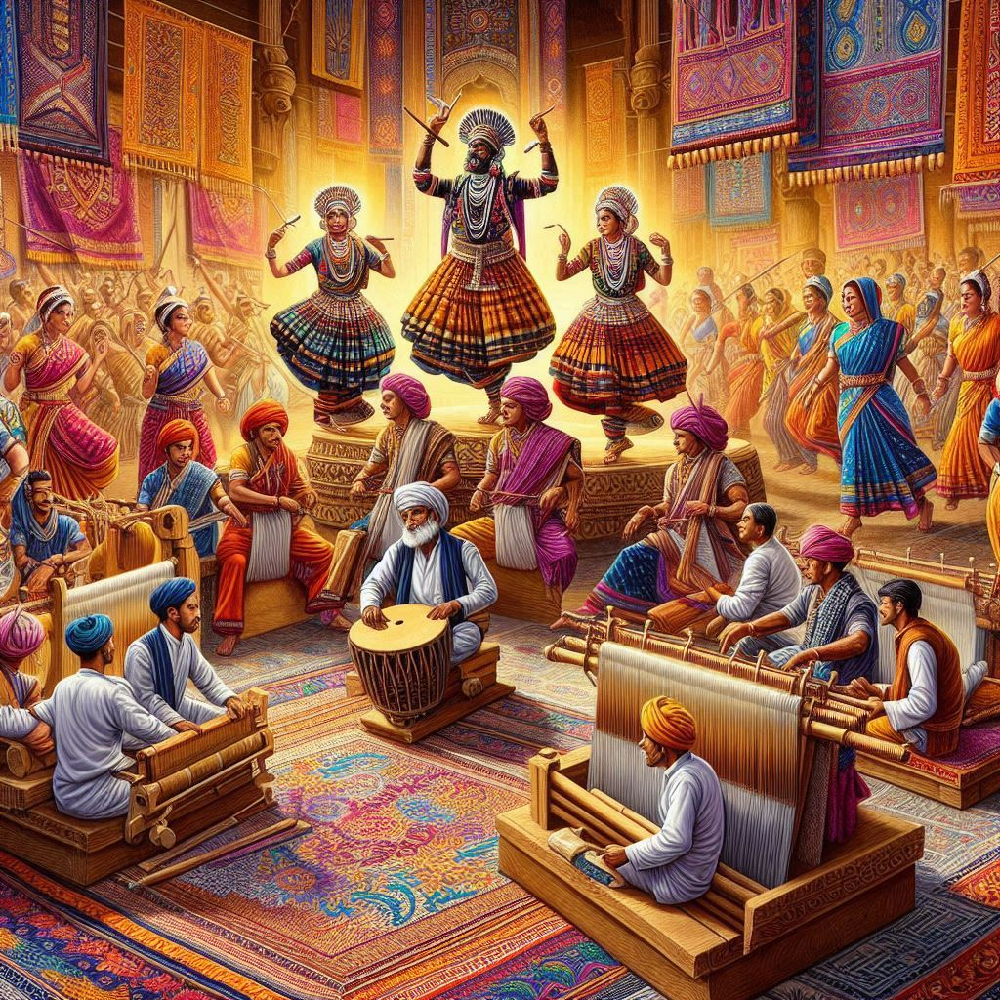
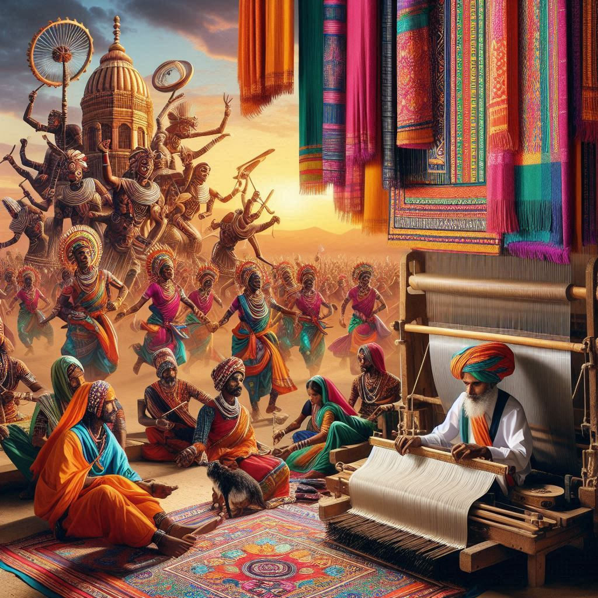

Traditions of Madhya Pradesh
Madhya Pradesh, the heart of India, is a melting pot of rich traditions that reflect its diverse cultural heritage. These traditions have evolved over centuries, influenced by various rulers, communities, and religions. Here’s a look at some of the key traditions of the state:
1. Festivals and Celebrations
Festivals in Madhya Pradesh are celebrated with immense enthusiasm and religious fervor, with a mix of Hindu, Muslim, and tribal influences.
-
Navratri: This is one of the most significant festivals, celebrated with grand celebrations, especially in Indore and Ujjain. People fast, pray, and participate in Garba and Dandiya dances, which are vibrant and energetic.
-
Diwali: Like the rest of India, Diwali is celebrated with much enthusiasm in Madhya Pradesh, with families decorating their homes with diyas (oil lamps) and bursting firecrackers.
-
Makar Sankranti: Celebrated with kite flying, bonfires, and traditional sweets like tilgul, this festival marks the beginning of the harvest season. It is celebrated with particular fervor in rural areas.
-
Tansen Music Festival: Held annually in Gwalior, this festival celebrates the legacy of Tansen, one of the greatest classical musicians of India. Renowned artists from all over the country perform at the festival.
-
Simhastha Kumbh Mela: Held every 12 years in Ujjain, this grand religious gathering attracts millions of devotees who come to take a holy dip in the Kshipra River. It is one of the largest gatherings of pilgrims in the world.
-
Baisakhi: Celebrated during the harvest season, it marks the start of the new agricultural cycle, with community fairs, traditional dances like Gidda and Bhangra, and rituals to honor the harvest.
2. Tribal Traditions
Madhya Pradesh is home to many indigenous tribes, and their traditions are deeply woven into the cultural fabric of the state. The Gonds, Baigas, Bhils, and Santhals are some of the prominent tribal groups. Their traditions include:
-
Folk Art and Dance: Tribal dances like Karma, Dandari, and Ghoomar are integral parts of community life. These dances are performed during harvest seasons or on festive occasions, with vibrant costumes and rhythmic beats.
-
Crafts: Traditional crafts like warli painting, bamboo work, and terracotta pottery are part of the tribal heritage. The Gond paintings, known for their intricate designs and vibrant colors, are a unique form of tribal art in Madhya Pradesh.
-
Tribal Rituals: The tribes in Madhya Pradesh perform several unique rituals to mark important milestones in life, such as birth, marriage, and death. These rituals are deeply spiritual and connected to nature, often invoking the blessings of ancestors and spirits.
3. Traditional Music and Dance
Music and dance are integral to the culture of Madhya Pradesh. The state has a rich tradition of classical and folk music, with various regional styles.
-
Gwalior Gharana: One of the oldest and most respected schools of Indian classical music, the Gwalior Gharana is renowned for its contributions to Hindustani classical music. The city of Gwalior is considered a hub for classical music.
-
Folk Songs: Folk songs play an important role in expressing the emotions and stories of the people. These songs are often performed during festivals and celebrations and are accompanied by traditional instruments like dholak, tabla, and sitar.
-
Rangoli and Folk Art: In the rural areas, Rangoli designs are created at doorsteps during festivals as a sign of welcome and prosperity. Folk art, through paintings and murals, is also an essential part of community life.


4. Cuisine Traditions
The traditional cuisine of Madhya Pradesh reflects its diverse culture, with flavors ranging from mild to spicy. Food is a major part of the state's traditions, and each region has its own specialty.
-
Poha: A popular breakfast dish, poha is made of flattened rice, and is often served with jalebi in the morning.
-
Dal Bafla: This is a traditional dish of wheat flour dough, which is steamed, then baked, and served with dal (lentil soup), and ghee. It’s a classic comfort food in rural Madhya Pradesh.
-
Bhutte Ka Kees: This dish is a unique preparation of corn mixed with spices and grated coconut, popular in the Indore region.
-
Indori Poha: Indore is known for its poha, served with a spicy and tangy sev topping. It’s a must-try when visiting the city.
-
Shikanji: A refreshing drink made from lemon, sugar, and spices, Shikanji is popular, especially during the summer months.
5. Handicrafts and Art
Madhya Pradesh is also famous for its rich tradition of handicrafts and art forms.
-
Chanderi and Maheshwari Sarees: The state is known for its traditional silk sarees, such as Chanderi and Maheshwari. These sarees are woven with intricate designs and are known for their fine texture and lightweight fabric.
-
Bamboo Craft: The tribal communities of Madhya Pradesh excel in making a variety of products from bamboo, including baskets, mats, and other utility items.
-
Gond Art: One of the most famous art forms in the region, Gond paintings are known for their detailed patterns, vibrant colors, and themes that often depict animals, nature, and tribal life.
6. Language and Literature
Language plays a crucial role in the traditions of Madhya Pradesh. The state is a linguistic blend of several dialects and languages, including Hindi, Malvi, Bagheli, and Chhattisgarhi. Literature in these languages often revolves around folklore, poetry, and epics that reflect the region’s deep cultural roots.
Conclusion
The traditions of Madhya Pradesh are deeply rooted in its history and culture, shaped by centuries of religious, tribal, and royal influences. Whether it's through festivals, folk art, music, or cuisine, the traditions of this central Indian state offer a glimpse into the diverse and rich cultural heritage that continues to thrive today.